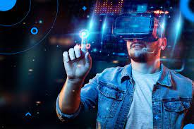
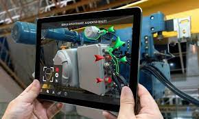
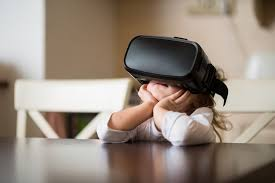

Realidad Virtual Aumentada el futuro de la humanidad
¿Qué es la realidad virtual aumentada?
La realidad virtual aumentada (RVA) ha emergido como una de las tecnologías más prometedoras de la última década. Combina elementos de la realidad virtual y la realidad aumentada para brindar experiencias inmersivas y mejoradas en una amplia gama de campos, desde el entretenimiento hasta la educación y más allá. En este artículo, exploraremos las ventajas y desventajas de la RVA, así como sus emocionantes aplicaciones futuras y su posible relación con obras de ficción como "Sword Art Online".
La realidad virtual aumentada es una tecnología que combina elementos de la realidad virtual (RV) y la realidad aumentada (RA) para crear una experiencia inmersiva que combina lo virtual y lo real. A diferencia de la RV, que crea un entorno completamente virtual, la RVA superpone elementos virtuales en el mundo real, permitiendo a los usuarios interactuar con ellos de manera más realista.
Ventajas
- La RVA ofrece una inmersión enriquecedora al superponer elementos virtuales en el entorno real. Esto permite a los usuarios experimentar situaciones y entornos que de otro modo serían inaccesibles o peligrosos.
- La RVA utiliza interfaces de usuario intuitivas, como gestos y seguimiento de movimiento, lo que facilita la interacción con los elementos virtuales. Esto hace que la tecnología sea más accesible y fácil de usar para una amplia gama de usuarios.
- La RVA tiene el potencial de mejorar la productividad en diferentes campos, como la medicina y la arquitectura. Por ejemplo, los médicos pueden utilizar RVA para practicar procedimientos quirúrgicos antes de realizarlos en pacientes reales, mientras que los arquitectos pueden visualizar modelos 3D de edificios en escala real en el lugar de construcción.
Desventajas
- Aunque los precios de los dispositivos de RVA han disminuido en los últimos años, todavía pueden ser prohibitivamente caros para algunos usuarios. Esto limita la adopción generalizada de la tecnología y restringe su acceso a ciertos sectores de la población.
- La RVA todavía enfrenta desafíos técnicos, como la latencia, la resolución de imagen y la duración de la batería de los dispositivos. Estas limitaciones pueden afectar la calidad de la experiencia y dificultar su uso prolongado.
- Al igual que con la realidad virtual, el uso prolongado de la RVA puede conducir al aislamiento social, ya que los usuarios están inmersos en un entorno virtual. Esto plantea preocupaciones sobre el impacto en las interacciones sociales y la salud mental.
Sword Art Online
"Sword Art Online" es una obra de ficción que presenta un mundo virtual en el que los jugadores pueden sumergirse completamente. Aunque la RVA comparte algunos conceptos con esta idea, como la inmersión y la interacción con elementos virtuales, es importante destacar que la tecnología actual no permite una experiencia tan completa como la representada en la serie. La RVA se centra en la superposición de elementos virtuales en el mundo real, mientras que "Sword Art Online" imagina una realidad virtual completa en la que los usuarios pueden vivir y explorar sin restricciones. Si bien es posible que en el futuro la RVA evolucione hacia una experiencia más completa, es importante tener en cuenta las limitaciones tecnológicas y éticas que deben abordarse antes de alcanzar ese nivel de inmersión.
Conclusion
La realidad virtual aumentada ofrece una amplia gama de ventajas y desventajas en diversos campos. Aunque presenta desafíos técnicos y limitaciones en la actualidad, su potencial para mejorar la productividad, enriquecer la educación y transformar la forma en que interactuamos con el mundo real es innegable. A medida que la tecnología avance, es probable que veamos aplicaciones futuras emocionantes y un mayor acceso a la RVA para usuarios de todo el mundo. Sin embargo, es importante tener en cuenta las implicaciones éticas y sociales a medida que continuamos explorando las posibilidades de esta tecnología en constante evolución.